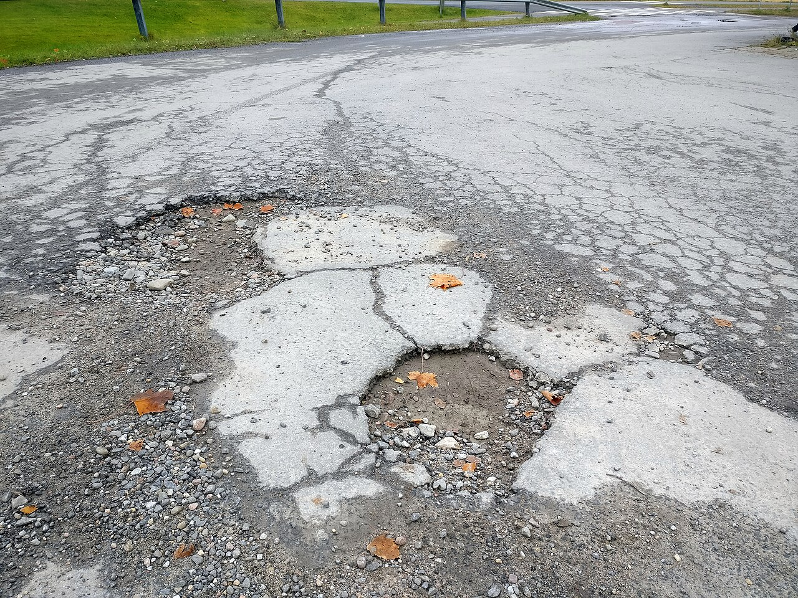
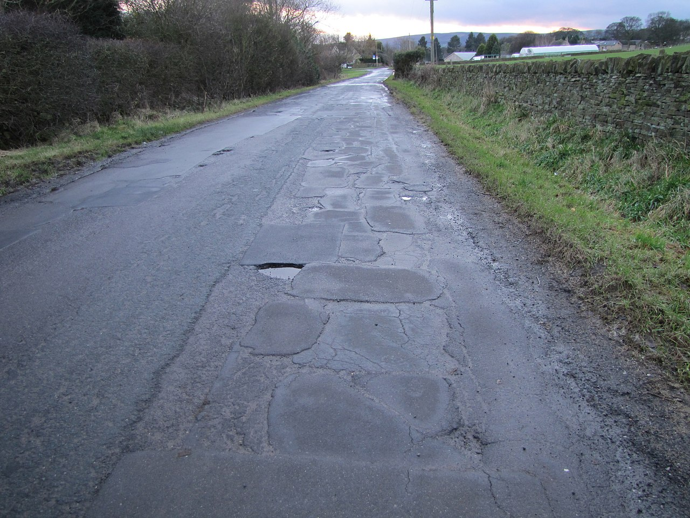

തത്സമയ ഡാഷ്ബോർഡ്
കേരളത്തിലെ എല്ലാ റോഡും, ഒരൊറ്റ സ്ക്രീനിൽ
പച്ച നല്ലത്, മഞ്ഞ ശ്രദ്ധ വേണം, ചുവപ്പ് മോശം. ഏതു റോഡിലും ടാപ് ചെയ്ത് പരിശോധിക്കൂ. ഓരോ പാനലും എന്താണെന്നറിയാൻ ? അടയാളത്തിൽ ടാപ് ചെയ്യൂ.
റോഡിന്റെ അവസ്ഥ
നല്ലത് · മിനുസം47%13,876 km
സാധാരണം · പരുക്കൻ31%9,152 km
മോശം · കേടായത്22%6,495 km
തത്സമയ അലേർട്ടുകൾ
SH-29 മഞ്ചേരി–തിരൂർ: കുഴികളുടെ കൂട്ടം, 3 തകർച്ച
2h · സ്ട്രീറ്റ് സ്കാൻ

+MDR പാലക്കാട്–മണ്ണാർക്കാട്: മഴയ്ക്കുശേഷം പരുക്കൻ കൂടി
5h · ആപ്പ് ഫ്ലീറ്റ് ×7

+SH-33 കൊച്ചി–മൂന്നാർ: ഓവുചാലിൽ വക്ക് തകർച്ച
1d · ഡ്രോൺ പരിശോധന
+
MC റോഡ് കോട്ടയം: വിള്ളൽ, 60 ദിവസം
2d · AI മോഡൽ
+
മുൻഗണനാ പട്ടിക
01അതീവം
SH-29 മഞ്ചേരി–തിരൂർ
മലപ്പുറം · 14 KM
02അതീവം
MDR പെരിന്തൽമണ്ണ–നിലമ്പൂർ
മലപ്പുറം · 22 KM
03കൂടിയത്
SH-33 കൊച്ചി–മൂന്നാർ
എറണാകുളം · 48 KM
04കൂടിയത്
NH-66 ആലപ്പുഴ–കൊല്ലം
ആലപ്പുഴ · 66 KM
05കൂടിയത്
MC റോഡ് കോട്ടയം കിഴക്ക്
കോട്ടയം · 11 KM
തിരഞ്ഞെടുത്ത റോഡ്റോഡ് ടാപ് ചെയ്യൂ
അവസ്ഥ, നീളം, അവസാനം പരിശോധിച്ച തീയതി എന്നിവ കാണാൻ ഭൂപടത്തിലെ ഒരു റോഡിൽ ടാപ് ചെയ്യൂ.
കണ്ടെത്തൽ
ഉറവിടം: സ്ട്രീറ്റ് സ്കാൻ · ദൃശ്യചിത്രം തെളിവായി സൂക്ഷിച്ചു
നല്ലത്
സാധാരണം
മോശം